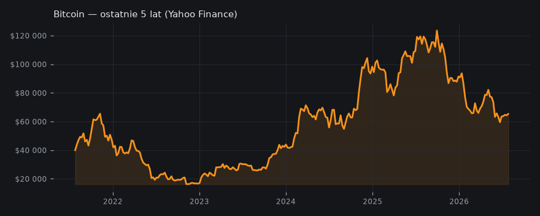
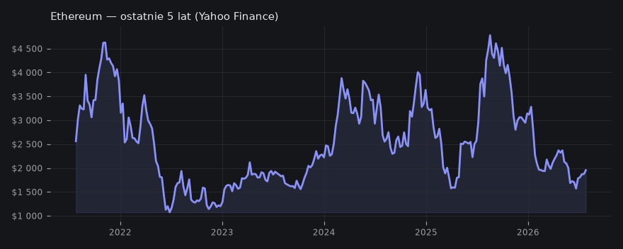

Apatia na rynku krypto: Czy to cisza przed burzą, czy wyczerpanie cyklu?
Analitycy wskazują na obecny stan apatii w świecie kryptowalut, ale nie są zgodni co do jej konsekwencji dla najbliższej przyszłości rynku.
🚨Rynek krypto w fazie apatii — ale czy to cisza przed burzą, czy zwykłe wyczerpanie cyklu? --- 🔹 Wg The Wolf Of All Streets i Into The Cryptoverse czuć totalną stagnację: niska aktywność, brak FOMO, mało gadu-gadu. To dokładne przeciwieństwo fazy euforii, którą widzieliśmy 6 miesięcy temu. --- 🔹 Scaramucci z Wolf Of All Streets twierdzi, że apatia to moment, w którym rynek szykuje się na tokenizację wszystkiego. Instytucje dopiero zaczną wchodzić. W jego opinii ten spokój nie oznacza końca gry — przeciwnie, to jest okno na budowanie nowych rozwiązań. --- 🔹 Cowen (Into The Cryptoverse) przypomina, że w poprzednich cyklach apatia zwiastowała korektę lub boczniak — 2018, 2020, 2022: sierpień i wrzesień były czerwone. Google Trends ledwo zipie, YouTube krypto ma mniej wyświetleń — retail odpuszcza i cykl się kończy. --- 🔹 Mimo analogii do 2018, poziom cen jest o kilka klas wyżej — faza apatii nie zaprosiła tym razem dołków pokroju 15k. --- Moim zdaniem apatia to idealny moment na zoom-out: wytrwali wyłapią okazje pod nową falę adopcji, reszta będzie narzekać na nudę i przegapi strukturalne zmiany. Tylko nie zapomnij, że ten rynek potrafi solidnie ubrać w bessę nawet najbardziej cierpliwych. nie jest to porada inwestycyjna
Into The Cryptoverse (Benjamin Cowen) — Bitcoin: Bear Market Resistance Band

🧠 Ściąga — żebyś wiedział o czym piszesz
Aktualizacja — co się zmieniło od wczoraj
Od wczoraj zmieniła się narracja kanałów – z entuzjastycznego skupienia na instytucjonalnej integracji i roli Japonii jako wzoru regulacyjnego, przeszliśmy do podkreślania panującej apatii na rynku kryptowalut. Kanały zgodnie opisują niskie zaangażowanie inwestorów, ale pojawiły się rozbieżności w ocenie najbliższej przyszłości: jedna strona widzi szansę na dalszy rozwój dzięki tokenizacji i adopcji przez instytucje, druga ostrzega przed możliwym pogłębieniem spadków w oparciu o historyczne cykle. Temat regulacji schodzi na dalszy plan, a uwaga przenosi się na analizę nastrojów i krótkoterminowej perspektywy.
Kto co mówi
- The Wolf Of All Streets (Scott Melker): Anthony Scaramucci uważa, że rynek jest obecnie w fazie "apatii", jednak widzi ogromny potencjał w tokenizacji aktywów i przyszłej adopcji blockchain przez instytucje finansowe, pomimo wpływu decyzji politycznych.
- Into The Cryptoverse (Benjamin Cowen): Benjamin Cowen analizuje historyczne cykle Bitcoina, sugerując, że obecna niska aktywność i brak entuzjazmu inwestorów detalicznych wskazują na wyczerpanie się cyklu, co może prowadzić do lokalnego maksimum lub dalszych spadków w lipcu i sierpniu, podobnie jak w latach 2018 i 2020.
Oba kanały zgadzają się, że rynek kryptowalut znajduje się w fazie apatii, charakteryzującej się niskim zaangażowaniem. Różnią się jednak w interpretacji krótkoterminowych konsekwencji: The Wolf Of All Streets widzi w tym potencjał dla przyszłej, instytucjonalnej adopcji i wzrostu wartości (długoterminowo), podczas gdy Into The Cryptoverse uważa apatię za sygnał potencjalnych spadków w najbliższych miesiącach, bazując na analizie cykli historycznych.
Twarde dane
Poziomy wg kanałów
- BTC: 60,000 — potential market cap growth
- BTC: 66,000 — price target
- BTC: 15,000 — potential bottom price
- BTC: 62,000 — current price
- BTC: 64,678.24 — aktualna cena
- BTC: 60k - 70k — zakres cenowy obecnej konsolidacji
- BTC: 67k — górny zakres wahań w bieżącym tygodniu
- BTC: 63,700 — dolny zakres wahań w bieżącym tygodniu
- BTC: 64,673.27 — cena w momencie nagrywania
- BTC: 64,701.04 — cena w momencie końcowego podsumowania
- BTC: 10,000 — historyczny szczyt z 2017 roku
- BTC: 3,100 — historyczny dołek po szczycie z 2017 roku
- BTC: 20,000 — historyczny szczyt z 2021 roku
- BTC: 15,500 — historyczny dołek po szczycie z 2021 roku
- BTC: 10 — procentowy wzrost w lipcu w obecnym roku
- BTC: 40 — procentowy wzrost w lipcu w roku 2018
- BTC: 20 — procentowy wzrost w lipcu w roku 2022
Wykresy
- BTC/USD — wykres
- Mapa likwidacji BTC
- Bitcoin — ostatnie 5 lat
- ETH/USD — wykres
- Ethereum — ostatnie 5 lat

Co z tego wynika
Apatia rynkowa może być trudna dla inwestorów krótkoterminowych, ale stanowi potencjalną okazję dla tych, którzy wierzą w długoterminowy rozwój technologii blockchain i adopcję kryptowalut, zwłaszcza w kontekście zbliżających się regulacji i tokenizacji.